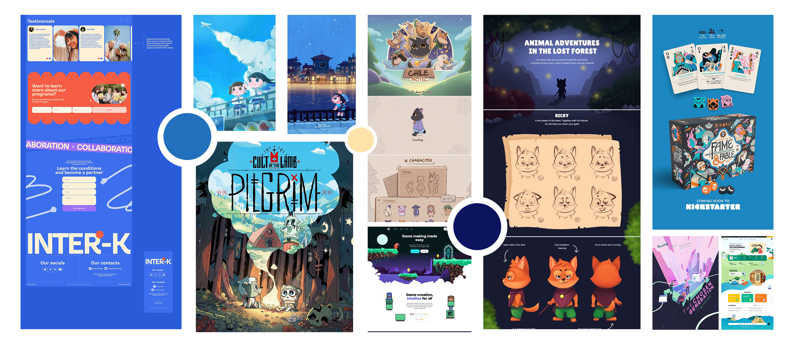
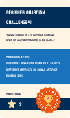
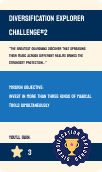
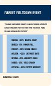
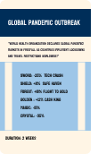
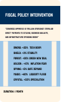
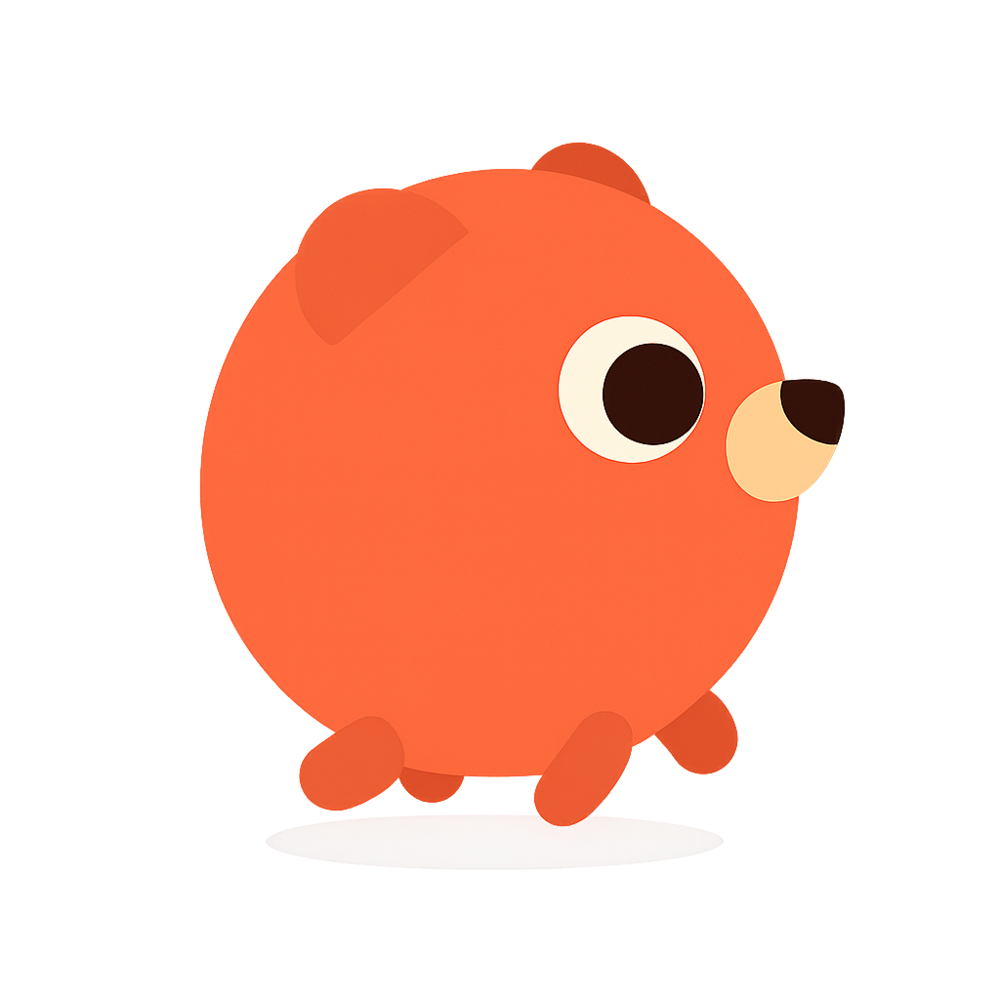

Fintech Webgame — Brand Design
A brand system for a playable on-chain experience — logo, type pairings, motion tokens, and an in-game brand kit that survives across 12 mini-games.
The Brand Brief
Skyland Guardian needed a visual identity that could speak to three audiences simultaneously: teenagers as the players, parents as the financial decision-makers, and potential institutional partners such as schools and financial literacy programs. Each audience carries a different visual vocabulary and a different threshold of trust. The brand had to synthesise all three without collapsing into a compromise that satisfies none of them.
The core tension was authority versus playfulness. Financial brands lean toward the former — deep blues, tight typography, institutional restraint. Youth games lean toward the latter — saturated colour, rounded forms, expressive energy. Skyland needed both at the same time, and the solution couldn't feel like a compromise between two aesthetics. It had to feel like a third thing entirely.

Typography Decision
Koulen is a display typeface with condensed, high-contrast letterforms. It carries authority through its weight and precision, while its slight quirks give it personality that a purely corporate typeface like Helvetica would lack. In all-caps, it reads as monumental and purposeful — the kind of typographic voice that works equally well on a game loading screen and a school information poster.
The type scale was designed with two use contexts in mind: the game interface, where readability at small sizes in a dynamic visual environment is critical, and the marketing materials, where large display sizes carry brand personality. The same typeface had to function across both without modification — which is why Koulen's optical precision at condensed widths was essential. A typeface that only works big is not a brand typeface.
Colour System
The palette was built around a two-layer logic: a structural layer and an expressive layer.
Deep Navy #1A3456 and Mid Blue #2370BC form the structural layer — the colours of institutions, systems, and trust. In the game UI they anchor navigation, score displays, and any communication that requires the user to trust the information they are reading.
Terracotta #F87647 and Amber #FCE1B9 form the expressive layer — carrying energy, warmth, and forward momentum. They appear in the game world itself: the Skyland islands, the artifact inventory, the mission cards, anywhere the player needs to feel alive and engaged rather than informed.
The design rule is simple: blues structure, warms animate. This separation is not purely aesthetic — it is a functional wayfinding system. When something is interactive and consequential, it lives in warm colours. When something is navigational or informational, it lives in cool blues. A player who has never read a single onboarding line can still navigate the interface correctly because the colour system itself communicates intent.

#1A3456 · Structural
#2370BC · Structural
#F87647 · Expressive
#FCE1B9 · Expressive
#E2DFFB · Secondary
#E2EFFD · Secondary
Poster Design
The promotional poster system had to serve two audiences: teenagers on social media where the game is discovered, and parents at school information nights where the educational value needs to be conveyed. The same visual system had to work in both contexts without redesign — which placed the entire tonal burden on typography.
The solution was to let Koulen carry the brand authority and let the illustration carry the adventure. Large Koulen headlines at full bleed. Game world illustration as background. Minimal copy. The poster works as a pure visual experience for teenagers. The headline copy provides the rational hook for parents reading the same image.

System in Context
A brand system is only as strong as its application consistency. The Skyland Guardian visual identity was designed to function across four distinct contexts without losing coherence: the game UI, the promotional website, the card game system, and print materials. Each context has different constraints — screen resolution, physical print, motion, static — but the same colour logic, typographic voice, and structural-versus-expressive colour rule applies across all of them.
Five cards, each with front and back face — the card game system extends the brand into physical game logic.







Two badge designs — awarded for meaningful player behaviour over time.


Three character designs — each embodies a different investment archetype within the Skyland world.

